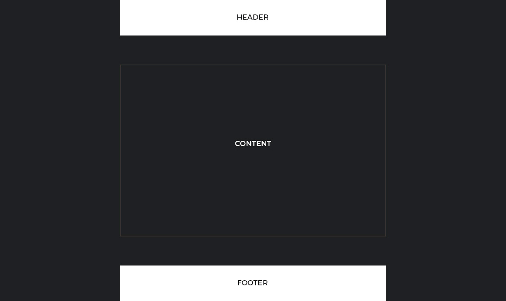

CSS flexbox sticky footer
September 17, 2017
This is going to be really simple blog entry. All we need to make an element stay at the bottom of the page is a couple of lines of CSS flexbox for our HTML elements.
HMTL
<body>
<header>…</header>
<main>…</main>
<footer>…</footer>
</body>CSS
body {
display: flex;
min-height: 100vh;
flex-direction: column;
}
main {
flex: 1;
}
The only element here with a height is the body, which needs to strech top to bottom to fill the visible space. The body has a flex-direction: column; property to stack the element on top of each other.
The end.